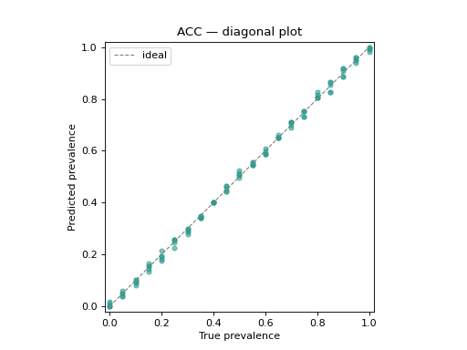
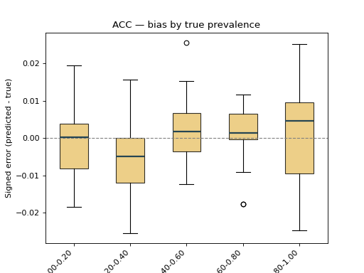
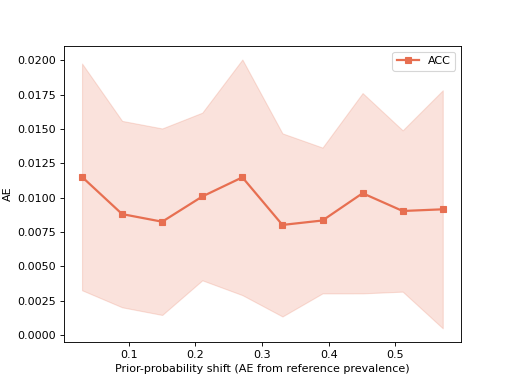
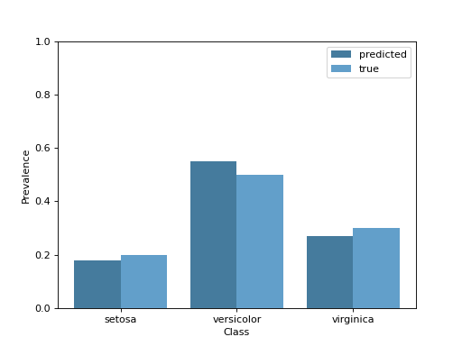
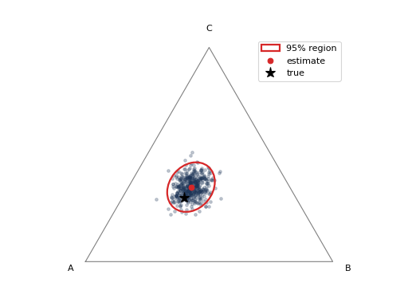
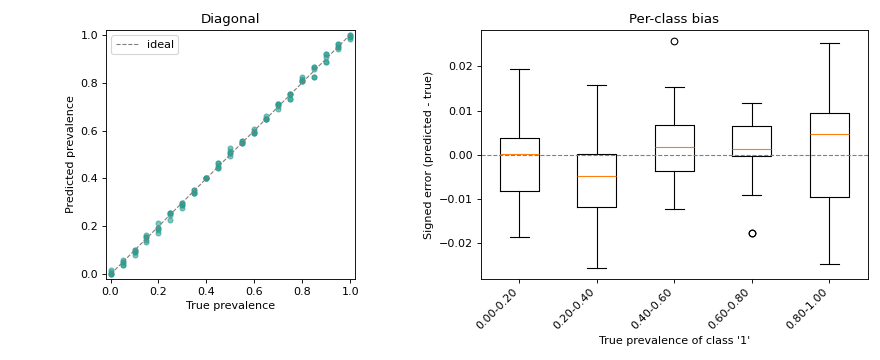

9. Visualization#
The mlquantify.visualization module provides a small collection of
plotting helpers that follow the scikit-learn *Display convention: every
class has from_predictions / from_estimator / from_protocol
constructors, a plot method that returns the display, and stores the
matplotlib ax_ and figure_ it drew on. Any extra keyword arguments are
forwarded to the underlying matplotlib artist, so you can restyle a plot (color,
alpha, line width, …) straight from the constructor, and pass your own ax=
to compose several plots in one figure.
Every example below is self-contained — use the copy button in the top-right corner of each code block to run it as-is — and each one passes a matplotlib styling keyword to show how the plots are customised.
The displays fall into two groups:
Multiple-sample displays summarise a whole evaluation protocol run (many test samples with varying prevalences) —
DiagonalDisplay,BiasDisplay,ErrorByShiftDisplay.Single-sample displays inspect one prediction —
PrevalenceDisplay,ConfidenceRegionDisplay.
The subpackage is not imported by import mlquantify (so matplotlib stays
off the top-level import path); import it explicitly:
from mlquantify.visualization import DiagonalDisplay
9.1. Multiple-sample displays#
9.1.1. Diagonal plot#
The signature quantification diagnostic: predicted prevalence against true
prevalence for every protocol sample, with the \(y = x\) reference line.
Points above the diagonal are over-estimates, points below are
under-estimates; tight clustering around the line marks a good quantifier.
Styling keywords such as color, alpha and s are forwarded to
ax.scatter.
from sklearn.linear_model import LogisticRegression
from sklearn.datasets import make_classification
from mlquantify.counting import ACC
from mlquantify.model_selection import apply_protocol
from mlquantify.visualization import DiagonalDisplay
X, y = make_classification(n_samples=2000, weights=[0.6, 0.4], random_state=0)
# Artificial Prevalence Protocol: fit once, predict on many test samples.
results = apply_protocol(
ACC(LogisticRegression(max_iter=1000)), X, y, protocol="app",
n_prevalences=21, repeats=5, batch_size=100, random_state=0,
)
disp = DiagonalDisplay.from_predictions(
results["true_prevalences"], results["predicted_prevalences"],
color="#2a9d8f", alpha=0.6, s=20,
)
disp.ax_.set_title("ACC — diagonal plot")

Note
from_protocol runs the
protocol for you in a single call:
DiagonalDisplay.from_protocol(ACC(LogisticRegression()), X, y,
protocol="app", n_prevalences=21)
9.1.2. Bias boxplots#
BiasDisplay shows the signed error
(predicted - true). With bins set, the samples are grouped into bins of
the true prevalence, exposing how the bias drifts along the range — a box
consistently above zero reveals systematic over-estimation. Extra keywords are
forwarded to ax.boxplot (here patch_artist / boxprops to colour the
boxes).
from sklearn.linear_model import LogisticRegression
from sklearn.datasets import make_classification
from mlquantify.counting import ACC
from mlquantify.model_selection import apply_protocol
from mlquantify.visualization import BiasDisplay
X, y = make_classification(n_samples=2000, weights=[0.6, 0.4], random_state=0)
results = apply_protocol(
ACC(LogisticRegression(max_iter=1000)), X, y, protocol="app",
n_prevalences=21, repeats=5, batch_size=100, random_state=0,
)
disp = BiasDisplay.from_predictions(
results["true_prevalences"], results["predicted_prevalences"],
bins=5, patch_artist=True,
boxprops=dict(facecolor="#e9c46a", alpha=0.8),
medianprops=dict(color="#264653", linewidth=2),
)
disp.ax_.set_title("ACC — bias by true prevalence")

9.1.3. Error by prior-probability shift#
ErrorByShiftDisplay plots a quantification
error metric as a function of how far the test prevalence drifts from the
training prevalence, with a ±std band — the standard way to read a
quantifier’s robustness to distribution shift. Keywords such as color,
marker and linewidth are forwarded to ax.plot.
import numpy as np
from sklearn.linear_model import LogisticRegression
from sklearn.datasets import make_classification
from mlquantify.counting import ACC
from mlquantify.model_selection import apply_protocol
from mlquantify.visualization import ErrorByShiftDisplay
X, y = make_classification(n_samples=2000, weights=[0.6, 0.4], random_state=0)
results = apply_protocol(
ACC(LogisticRegression(max_iter=1000)), X, y, protocol="upp",
n_prevalences=200, batch_size=100, random_state=0,
)
_, counts = np.unique(y, return_counts=True)
train_prevalence = counts / counts.sum()
ErrorByShiftDisplay.from_predictions(
results["true_prevalences"], results["predicted_prevalences"],
train_prevalence=train_prevalence, error_metric="ae", name="ACC",
color="#e76f51", marker="s", linewidth=2,
)

9.2. Single-sample displays#
9.2.1. Prevalence bars#
For a single test sample, PrevalenceDisplay
draws the predicted per-class prevalence, optionally next to the ground truth.
The color keyword (and any other ax.bar keyword) styles the predicted
bars.
from mlquantify.visualization import PrevalenceDisplay
PrevalenceDisplay.from_predictions(
[0.18, 0.55, 0.27],
true_prevalence=[0.20, 0.50, 0.30],
class_names=["setosa", "versicolor", "virginica"],
color="#457b9d",
)

Note
from_estimator predicts
with a fitted quantifier for you:
PrevalenceDisplay.from_estimator(fitted_quantifier, X_sample)
9.2.2. Confidence regions#
ConfidenceRegionDisplay visualises the
uncertainty of a single prediction from a set of bootstrap prevalence estimates
(for instance from AggregativeBootstrap, or via
construct_confidence_region). For a 3-class
problem it draws a confidence ellipse on the probability simplex; for any
other number of classes it falls back to per-class intervals. The color /
alpha keywords style the bootstrap point cloud.
import numpy as np
from mlquantify.visualization import ConfidenceRegionDisplay
# 500 bootstrap prevalence estimates for one 3-class prediction.
rng = np.random.default_rng(0)
prev_estims = rng.dirichlet([40, 25, 35], size=500)
ConfidenceRegionDisplay.from_estimates(
prev_estims, confidence_level=0.95,
class_names=["A", "B", "C"], true_prevalence=[0.45, 0.25, 0.30],
color="#1d3557", alpha=0.25,
)

If you already have a fitted region object, use
from_region instead:
from mlquantify.confidence import construct_confidence_region
region = construct_confidence_region(prev_estims, method="ellipse")
ConfidenceRegionDisplay.from_region(region, class_names=["A", "B", "C"])
9.3. Combining plots on one figure#
Because every display accepts an ax, plots compose like any other matplotlib
artist — pass your own axes to draw several side by side:
import matplotlib.pyplot as plt
from sklearn.linear_model import LogisticRegression
from sklearn.datasets import make_classification
from mlquantify.counting import ACC
from mlquantify.model_selection import apply_protocol
from mlquantify.visualization import DiagonalDisplay, BiasDisplay
X, y = make_classification(n_samples=2000, weights=[0.6, 0.4], random_state=0)
results = apply_protocol(
ACC(LogisticRegression(max_iter=1000)), X, y, protocol="app",
n_prevalences=21, repeats=5, batch_size=100, random_state=0,
)
true_prev = results["true_prevalences"]
pred_prev = results["predicted_prevalences"]
fig, axes = plt.subplots(1, 2, figsize=(11, 4.5))
DiagonalDisplay.from_predictions(
true_prev, pred_prev, ax=axes[0], color="#2a9d8f", alpha=0.6, s=20,
)
axes[0].set_title("Diagonal")
BiasDisplay.from_predictions(true_prev, pred_prev, ax=axes[1], bins=5)
axes[1].set_title("Per-class bias")
fig.tight_layout()
